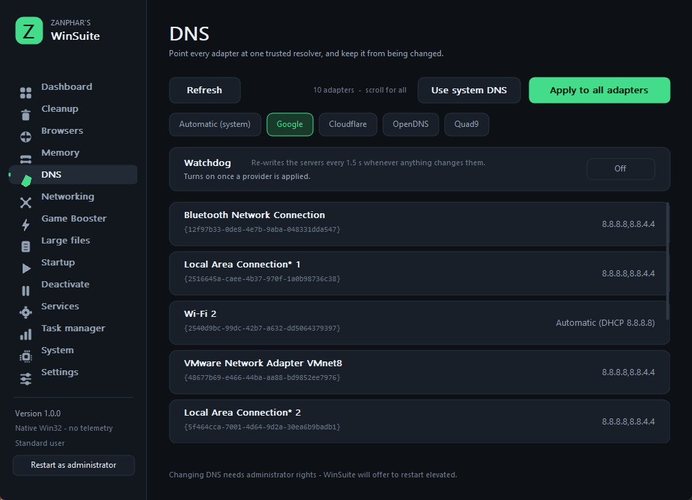
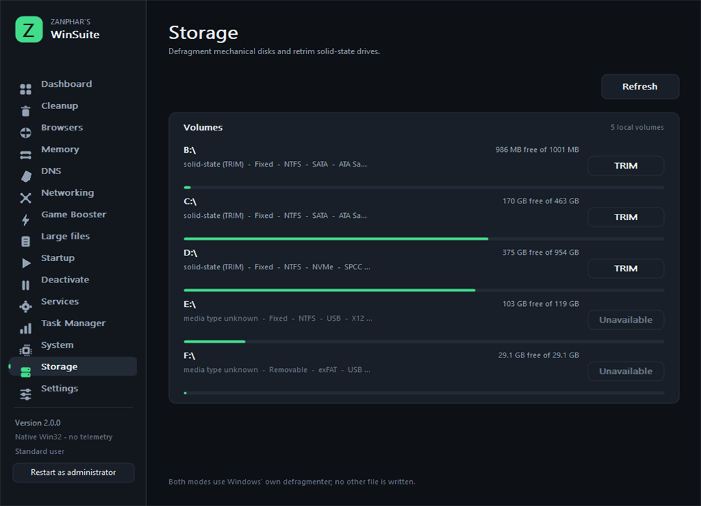

Fifteen pages
Every page, and what it actually does.
The suite is one window with fifteen pages, and each one is a small, complete tool: it reads the machine, shows what it found, asks before it changes anything, and can put back what it changed.
Dashboard
The state of the PC, before you touch it
Live RAM, CPU and disk meters with a history bar each, the machine's specifications, every connected volume, and the two quick jobs people actually press first.
- Every volume, not just fixed disks. Removable, external, optical, network and RAM disks with their bus, model and free space — the list scrolls when there are more than fit.
- Quick clean and Recycle Bin. A regular clean of the caches, and a one-press trip to the Recycle Bin, both with the same prompts as the deep pages.
- No hidden polling. The meters update while the page is visible; nothing keeps sampling behind it.

Cleanup
Measured as the page opens, and careful with your files
Temporary files, Windows Update downloads, prefetch, crash dumps, error reports and browser caches — measured row by row the moment the page opens, so it never sits empty waiting for a button.
- Per-row progress. Each row reports its own measurement, and Cancel stops a long scan part way; rows it never reached keep their previous figure, dimmed rather than discarded.
- Personal targets ask first. Downloads is listed but stays unticked, and cleaning it names the file count and says the files go to the Recycle Bin.
- Your ticks survive a restart. The selection, the sort order (biggest first or built-in) and the choice itself are saved in
settings.ini; Reset to defaults clears them. - Select all, Clear all, Scan, Cancel. Whole-list controls sit alongside per-row ticks, and Scan comes back the moment a clean finishes.

Browsers
History, cookies, autofill, caches and sessions per browser
Each installed browser is measured before anything is deleted — Chrome and Edge, plus the Chromium and Firefox families — and a browser that is running is skipped until its windows close.
- Measured, not guessed. The size and file count come from the profiles on disk, not from a claim in the interface.
- Close first, then clean. The page can close the listed browsers for you and carry on, so a locked database never leaves half a history behind.
- It tells you what will be lost. Sites will sign you out; autofill entries are gone. The confirmation says so before it starts.

Memory
Free memory, without the placebo
Installed, available, committed and cached memory with a live gauge and the eight largest processes. Regular clean trims the working sets Windows can spare; deep clean asks the kernel to flush its lists.
- Smart RAM's automatic clean lives here. Threshold chips at 65, 75, 85 and 95 percent, an idle clean, and clear clipboard on clean — saved and applied without a second tray program.
- Prompts you control. Regular and deep clean each ask before they run; both prompts can be switched off in Settings if you would rather they just go.
- Honest numbers. Available memory is read fresh every tick and the page says how much was actually released.

DNS
One resolver, every adapter, and a watchdog
Every adapter Windows reports with its current resolver: Bluetooth, Ethernet, Wi-Fi, Hyper-V, kernel debugger, VMware. Pick Google, Cloudflare, OpenDNS, Quad9 or automatic, apply it to all of them, or put the system DNS back.
- Watchdog. While it is on, anything that changes the servers is re-written within 1.5 seconds, and the card counts what it has reverted this session.
- All adapters reachable. The list scrolls a whole card per wheel notch and ends on a card edge, with a bar and a count whenever there is more to see.
- Journaled changes. The previous servers and their type are saved, so Use system DNS restores exactly what was configured before.

Internet & networking
Gaming latency you can put a number on
Four tried-and-true tweaks — Nagle's algorithm off on every configured adapter, network throttling and system responsiveness off, the Games multimedia task profile, no QoS reservation — with a profile button and a per-row switch.
- Latency check. Type any host or IPv4 address, press measure, and get four echoes on a worker thread: average, min–max, packet loss, and the difference between the two readings.
- Before and after with one press. Applying the profile with no reading yet measures the baseline first; applying it with one in hand measures the host again as soon as the values land. Either way the card settles on the comparison by itself, so the effect is a number without a second press.
- Revert all, or one row. Values are journaled with their type before the write. A value another tool set used to be read-only here; it now offers Turn off, which saves what is there before removing it, so the row returns to the Windows default and Revert restores exactly what the other tool had chosen.
Game Booster
One profile, and every row controllable here
System Turbo's profile is the first row — high performance power plan, parked background services, Game DVR off — followed by Game Mode, mouse acceleration off, fullscreen optimisations off, and window animations and transparency off.
- Apply profile or Revert all. The same journal as the rows, so the whole set can go on or come off together.
- Set elsewhere is gone. A value another tool already set can be turned off from here, with its original data saved so Revert restores exactly that.
- Where a restart is needed, it says so. Power plan and registry changes report what they changed and what Windows needs to re-read.
- Twenty-eight background services, each its own switch. Telemetry, Xbox Live, Print Spooler, Remote Desktop, Windows Event Log and the rest of the list a gaming session does not need, with the real service names and their live start type on the row. Turn off stops them and sets them to Manual - not Disabled, so Windows can still start one when something asks for it - after saving the start type, running state and delayed-autostart flag, so Revert puts each one back exactly. Rows Windows leans on print their state in the warning colour, a row Windows already had off says Already off, and none of them is part of the profile.

Services
The whole service database, with a safety rail
All installed services with display name, service name, binary, start type and state. Search narrows the list as you type, and the four start types are one press each.
- Bulk ticks. Tick rows, press Start or Stop once, and the action runs over every ticked service that needs it, with one prompt and one summary.
- New, Edit and Delete for your own entries. Only for binaries that are not Windows components; the Windows and security entries are protected from removal.
- Nothing acts on what you cannot see. A filter that hides a ticked row drops that tick, so a bulk action never touches a hidden service.

Task Manager
Affinity and priority that survive the next boot
Every process with its pid, account, affinity, priority and memory. End task asks windows to close; Force end terminates after a confirmation; New task starts a program with the cores and priority you choose.
- Rules, not one-off clicks. Tick Remember and the affinity mask and priority are saved per program name, then re-applied whenever that program starts.
- One small agent, only if you ask. The saved rules are enforced by
WinSuiteAgent.exe, registered to run at sign-in the first time a rule is saved — and removed again with the rules. - Multi-select. Ticks drive End task and Force end over the whole set, and the search box narrows 250+ processes to the one you meant.

Large files
Find what is eating the disk
Scan a folder — or all of them — for files above a threshold you set, biggest first, with the folder each one lives in. Removing one sends it to the Recycle Bin, so a mistake is recoverable.
- Thresholds, not guesses. Choose the size that matters and the scan lists only what is at least that big.
- Guarded deletion. Only the files it found can be removed, and they are recycled rather than unlinked.

Startup & Deactivate
Take things out of the boot, and put them back
Startup lists every Run entry and Startup-folder shortcut with where it came from and whether it is on. Deactivate parks third-party services that start with Windows, keeping their start type and any registry values so they can be restored exactly.
- Disable without deleting. Startup entries are switched off by moving the value aside, not by removing it, so turning one back on preserves its type and data.
- Restore all. Deactivate keeps a journal; Restore all puts every parked service and value back in one step.
- System entries are left alone. Windows components, drivers and security software are never offered for deactivation.
What the suite will not do
It will not disable a Windows component, a driver, or security software; it will not delete a startup entry it did not create; and it will not claim a value it cannot put back.
System
The machine's own report card
Processor, installed memory, GPU and its driver, the Windows build, the boot time and every volume with its bus, model, file system and usage bar.
- All storage, scrollable. Every connected volume — installed, external, swappable, optical, network — with a bar that shows where you are.
- Copy report. The whole readout on the clipboard for a support thread, without a screenshot.

Storage
Defragment or retrim, with the drive named first
Every local volume Windows reports, with the mode its media actually needs: Defragment (/D /H) on a mechanical disk and TRIM (/L) on a solid-state drive. Optical and network volumes are not offered a disk operation at all.
- A confirmation per volume. The dialog names the drive, its label, the media and the exact mode before Windows asks for administrator rights; the default answer is No.
- One operation, fully interruptible. Every Storage action is disabled while
defrag.exeruns. The page shows a progress bar, the percentage the defragmenter reports and elapsed time, and Cancel terminates the child process and re-enables the page. - Unknown media is left alone. A volume that cannot say whether it is solid-state or mechanical is shown as Unavailable rather than being sent through the wrong mode. The Windows defragmenter is resolved from System32, not from a stray executable beside the suite.

Settings
Six switches, and the agreement
Close to system tray and Minimize to system tray, both off until you choose them and remembered in settings.ini. Show on system tray at startup opens the suite straight into the tray with no window on the desktop. Toast notifications, on by default, gates the balloon a menu-started memory clean reports itself with. Ask before Regular clean and Ask before Deep clean are also on by default, so no clean runs unannounced.
- A tray menu that does some work. Open, Regular Memory Clean, Deep Memory Clean and Exit: both cleans run exactly what the Memory page runs, prompts and the deep clean's administrator restart included, so the window never has to be opened for one.
- Read the licence. The full BSD 3-Clause agreement opens read-only in the window, with the copyright line on the page itself.
- Nothing else. No account, no sync, no telemetry switch to hunt for.

The four engines
The suite grew out of four standalone programs. Their engines now run inside the window, and the executables still build and run on their own.
| Program | What it does | Elevation | Data |
|---|---|---|---|
Browser CleanerBrowserCleaner.exe | Measures and deletes browser history, cookies, autofill, caches and session data. | asInvoker | None — edits the browser profiles themselves |
DNS ProtectDNSProtect.exe | Applies one resolver to every adapter and reverts interference within 1.5 seconds. | requireAdministrator | %ProgramData%\DNSProtect\ |
Smart RAMSmartRAM.exe | Trims working sets on a threshold and on idle, with clipboard clearing. | asInvoker | %LOCALAPPDATA%\SmartRAM\config.ini |
System TurboSystemTurbo.exe | High-performance plan, parked background services and Game DVR off. | requireAdministrator | %ProgramData%\SystemTurbo\ |
See it on your own machine
Version 2.0.0 · Windows 10/11 x64 · no installer · BSD 3-Clause.